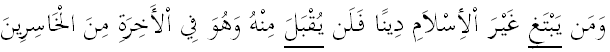
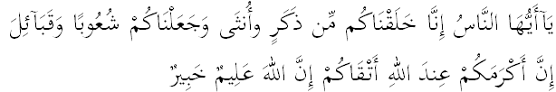
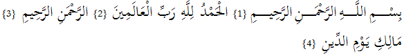
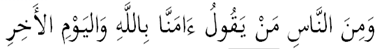
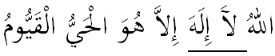
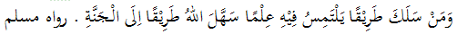

TRY OUT
UJIAN AKHIR SEMESTER
TAHUN AKADEMIK 2017/2018
Mata Pelajaran
: Pendidikan Agama Islam
Guru
: Uswatun Khasanah,M.Ag.
Kelas
: XII SMP
Hari/Tanggal
: Jumat, 23 Maret 2018
Waktu
: 90 menit
Sifat
: Close Book
SOAL PILIHAN GANDA
1. Ega Cahya Nugraha adalah seorang anak yang selalu berhati-hati dalam segala ucapan dan perbuatannya, karena ia yakin bahwa Allah SWTMaha Mendengar dan Maha Melihat. Perbuatan tersebut merupakan pengamalan dari keyakinannnya bahwa Allah SWT. memiliki Asmaul Husna yaitu.....
Al Malik dan Al Quddus
As Samii dan Al Bashiir
Ar Rozzaaq dan Al Fattah
Al Adziim dan Al Ghofuur
Ahmad memiliki penghidupan yang cukup dan memiliki kelebihan jika dibandingkan dengan orang lain, namun ia tidak pernah membanggakan kelebihannya. Hal tersebut menunukkan bahwa Ahmad memiliki perilaku.....
taawun
tawadhu
tawakkal
tasamuh

Al Qur’an Surat Ali Imran ayat 85 yang bergaris bawah di atas mengandung hukum bacaan ....
Ihfa Syafawi
Idghom Mutamatsilain
Qalqalah
Waqaf Muanaqah
Allah SWT berfirman dalam Q.S. Al Hujurat ayat 13!

tersebut merupakan salah satu dalil naqli tentang….
sifat zuhud
sifat tawakkal
sifat qanaah
sifat tasamuh
Perhatikan ayat berikut!

Al Qur’an surat Al Fatihah ayat 1- 4 tersebut yang mengandung hukum bacaan Al Qamariyah terdapat pada ayat....
1
2
3
4
17. Di dalam berdiskusi, beda pendapat dengan teman adalah hal yang biasa. Namun Badu, salah seorang siswa kelas IX tidak mau orang lain beda pendapat dengan dia. Orang lain ia paksa untuk mengikuti dan membenarkan pendapatnya. Badu tersebut berarti memiliki sifat tercela yaitu ananiah. Dampak negativ sifat tersebut diantaranya.....
dapat mengarah kepada kesombongan
menjauhkan diri dari rizki Allah SWT.
akan menjadi provokator di kelasnya
tidak memiliki rasa percaya diri
18. Ciri-ciri orang munafik sesuai hadits nabi adalah berbohong, ingkar janji dan khianat. Ketiga ciri tersebut mempunyai dampak negatif dalam kehidupan sehari-hari, yaitu...
tidak dipercaya oleh orang lain
tidak mengerti perasaan orang lain
.tidak senang orang lain berhasil
.tidak senang orang lain berhasil
Perhatikan Q.S. Al-Baqarah ayat 8 berikut !

Pada ayat tersebut terdapat hukum bacaan tajwid yang berkaitan dengan nun sukun, yakni...
Idzhar halqi
Idghom Bighunnah
Iqlab
Ihfa
Perhatikan ayat berikut !

Pada lafadz yang bergaris bawah terdapat hukum bacaan mad..
Mad Shilah Qashirah
Mad 'Aridi Lissukun
Mad Wajib Muttasil
Mad Jaiz Munfasi
Perhatikan hadits berikut ini !

Pernyataan yang tepat berdasarkan hadits tersebut di atas adalah.....
orang yang menuntut ilmu akan memperoleh kebahagiaan hidup di akhirat
Allah akan memberikan kelapangan surga bagi orang yang berilmu
Syarat utama masuk kesurga adalah ilmu pengetahuan yang banyak
Allah akan memudahkan jalan kesurga bagi orang yang menuntut ilmu
Salah satu puasa sunnah adalah puasa Arafah. Diantara keutamaan puasa tersebut adalah .....
menghapus dosa setahun yang lalu dan setahun akan datang
menghapus dosa selama satu tahun yang akan datang
meninggikan derajat di akhirat
Diampuni dosa-dasa yang telah lalu.
Seseorang yang beribadah haji wajib melakukan niat haji dan dengan mengenakan pakaian dua helai kain tidak berjahit bagi laki-laki dan pakaian menutupi seluruh tubuh kecuali bagian muka dan telapak tangan bagi perempuan.
Jenis amalan tersebut dinamakan...
Ihram
Tawaf
Sa'i
Tahalul
Setelah melakukan semua rangkaian ibadah haji, sebelum kembali ke tanah air, jama'ah haji wajib melakukan tawaf perpisahan atau tawaf terakhir.
Tawaf tersebut dinamakan tawaf.....
qudum
wada'
ifadhah
sunah
Islam merupakan agama yang membawa kedamaian sehingga mudah diterima secara baik oleh masyarakat Indonesia. Sampai saat ini Indonesia merupakan Negara dengan penduduk muslim terbesar. Hal ini tidak terlepas dari para penyebar Islam pertama yang datang dari Arab. Salah satu media penyebaran Islam adalah melalui perdagangan islami. Sistem perdagangan ini mengutamakan kejujuran, sehingga menjadi daya tarik penduduk untuk memeluk Islam.
Dari deskripsi tersebut dapat diketahui bahwa cara masuknya Islam ke Indonesia adalah...
hubungan sosial
perdagangan
pengajaran
kebudayaan
Penyebaran agama Islam tidak terlepas dari peran raja-raja Islam. Kerajaan yang menerapkan pemerintahan Islami, maka rakyatnyapun mengikutinya. Salah satunya adalah kerajaan Demak. Demak merupakan kerajaan Islam pertama di pulau Jawa yang ikut dalam menyebarkan agama Islam. Raden Fatah adalah raja pertama dengan penasihatnya para Wali Sanga. Maka penyebaran Islam di pulau Jawa menjadi lebih mudah.
Nilai yang patut diteladani oleh seorang muslim dari peran raja Islam sesuai deskripsi tersebut adalah....
dakwah wajib dilakukan oleh raja
dakwah akan efektif bila bila dilakukan oleh raja
setiap muslim mempunyai kewajiban dakwah
setiap raja sebaiknya memiliki penasihat spiritual
Syarat sah salat di antaranya adalah ....
Suci dari dosa
Memakai wewangian
Suci dari hadas besar dan kecil
Memakai pakaian yang rapi
Syarat wajib salat di antaranya adalah sebagai berikut, kecuali ....
Islam
Balig
Berakal
Sehat
Contoh hal yang dapat membatalkan salat adalah ....
Makan atau minum dengan sengaja
Membaca Al Fatihah dengan pelan
Bernafas dengan sengaja
Mengedipkan kelopak mata
Salah satu rukun salat adalah tertib. Yaitu merupakan suatu perbuatan melakukan rukun-rukun salat secara ....
Santai
Serius
Berurutan
Jelas
Peringatan maulid Nabi Muhammad SAW. di Nusantara adalah salah satu tradisi umat Islam. Selain mendengarkan tausiah atau nasihat agama dari para ulama, maulid Nabi biasanya diisi dengan membaca Al Qur'an, shalawat, dan riwayat Nabi. Biasanya dalam peringatan tersebut dihadiri oleh banyak orang.
Dari deskripsi tersebut, nilai-nilai yang terkandung dalam peringatan maulid Nabi adalah....
keimanan, kecintaan kepada Nabi Muhammad dan silaturrahim
memupuk perilaku toleransi intern dan antar umat beragama
membiasakan perilaku saling gotong royong antar manusia
meningkatkan ukhuwah dan memupuk cinta tanah air
SELAMAT MENGERJAKAN